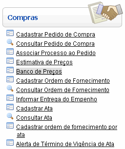
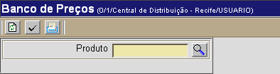
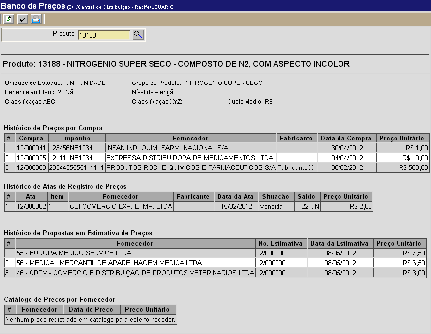

Banco de Preços [ Voltar ]
Utilize esta
tela para consultar
preços e fornecedores de um determinado produto. É possível conferir
aqui preços catalogados e praticados em certames anteriores,
além dos fornecedores associados ao produto.
O formulário "Banco de Preços"
encontra-se dentro do menu "Compras".

Ao clicar no formulário, o sistema exibirá a seguinte
tela:

1º
Passo: informe
o código do produto para o qual deseja gerar o banco de preços. Clique no botão
 [Procurar]
para selecionar o produto a partir de uma lista contendo todos os produtos
cadastrados. Após localizá-lo na lista, selecione-o com um clique. [Procurar]
para selecionar o produto a partir de uma lista contendo todos os produtos
cadastrados. Após localizá-lo na lista, selecione-o com um clique. 2° Passo: clique no botão  para processar a consulta. Os
resultados são divididos em dados principais do produto, na parte
superior da tela, e nas seções "Histórico de Preços por Compra",
"Histórico de Atas de Registro de Preços", "Histórico de Propostas em
Estimativa de Preços" e "Catálogo de Preços por Fornecedor". para processar a consulta. Os
resultados são divididos em dados principais do produto, na parte
superior da tela, e nas seções "Histórico de Preços por Compra",
"Histórico de Atas de Registro de Preços", "Histórico de Propostas em
Estimativa de Preços" e "Catálogo de Preços por Fornecedor". 
Clique no botão  para
visualizar e imprimir o relatório do histórico de preços. para
visualizar e imprimir o relatório do histórico de preços.
Ir
para o topo da página
|